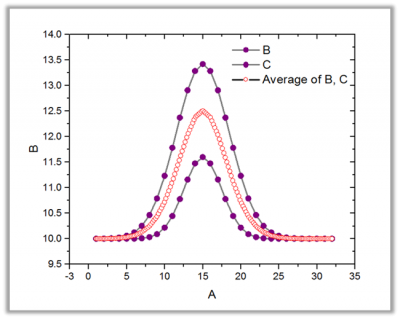

. Die entsprechenden Y-Werte werden nicht gemittelt. Die sich ergebenden X-Werte werden in aufsteigender Reihenfolge sortiert.
. Die entsprechenden Y-Werte werden nicht gemittelt. Die sich ergebenden X-Werte werden in aufsteigender Reihenfolge sortiert.
Das Hilfsmittel Mehrere Kurven mitteln kann Eingabekurven mitteln oder zusammenfassen und das Ergebnis als XY-Bereich ausgeben. Wenn die Methode auf Verknüpfen gesetzt ist, werden die Eingabekurven zu einer neuen Kurve zusammengefasst. Wenn die Methode auf Durchschnitt gesetzt ist, werden die Eingabekurven zu einer neuen Kurve gemittelt. Weitere Ausgaben wie Standardabweichungen, Standardfehler und Anzahl der Punkte können auch ausgegeben werden, wenn die Methode auf Durchschnitt gesetzt ist.
| Neu berechnen |
Bedienelemente zur Neuberechnung der Analyseergebnisse
Weitere Informationen finden Sie unter Analyseergebnisse neu berechnen. |
|---|---|
| Eingabe |
Legt mehrere zu mittelnde oder zusammenzufassende Kurven fest. Hilfe zum Festlegen von Bereichen finden Sie hier: Eingabedaten festlegen |
| Methode |
Legt die Mittelungsmethode fest.
|
| Durchschnitt von X |
Nur verfügbar, wenn Methode = Durchschnitt. Bestimmt, wie die X-Werte für die durchschnittliche Kurve berechnet werden.
|
| Toleranz für gemeinsame X-Werte |
Diese Option ist nur verfügbar, wenn Wie Quelle X für Gemitteltes X ausgewählt ist. Werte von X, die innerhalb der Toleranz liegen, werden gemittelt. |
| Anzahl der Punkte |
Diese Option ist verfügbar, wenn Gemitteltes X nicht auf Wie Quelle X gesetzt ist. Sie legt die Anzahl der Punkte der interpolierten Kurven fest. Sie berechnet automatisch eine Anzahl, wenn das Kontrollkästchen Auto aktiviert ist. Sie können auch das Kontrollkästchen Auto deaktivieren und die Werte selbst festlegen. |
| X-Minimum |
Diese Option kann nur bearbeitet werden, wenn Benutzerdefiniert für Gemitteltes X (nur lesbar für Gemeinsamer X-Bereich, Gesamter X-Bereich) ausgewählt ist. Diese Option legt den minimalen X-Wert für die gemittelte Kurve fest. Sie berechnet automatisch eine Anzahl, wenn das Kontrollkästchen Auto aktiviert ist. Alternativ deaktivieren Sie das Kontrollkästchen Auto und geben Sie einen Wert ein. |
| X-Maximum |
Diese Option kann nur bearbeitet werden, wenn Benutzerdefiniert für Gemitteltes X (nur lesbar für Gemeinsamer X-Bereich, Gesamter X-Bereich) ausgewählt ist. Diese Option legt den maximalen X-Wert für die gemittelte Kurve fest. Sie berechnet automatisch eine Anzahl, wenn das Kontrollkästchen Auto aktiviert ist. Alternativ deaktivieren Sie das Kontrollkästchen Auto und geben Sie einen Wert ein. |
| Interpolation |
Diese Option ist nur verfügbar, wenn Gemitteltes X nicht auf Wie Quelle X gesetzt ist. Sie bestimmt, wie die X-Werte vor der Mittelung der Eingabekurven interpoliert werden.
|
| Keine Extrapolation |
Nur verfügbar, wenn Gemitteltes X nicht auf Voller X-Bereich, Benutzerdefiniert und Kurvenspur folgen gesetzt ist. Bestimmt, ob die Kurven extrapoliert werden, wenn die Eingabekurven verschiedene X-Bereiche haben. |
| X sortieren |
Diese Option ist nur verfügbar, wenn Methode = Verknüpfen. Sie bestimmt, wie die X-Werte der gemittelten Kurve sortiert werden. Die Y-Werte werden entsprechend neu geordnet.
|
| Zusätzliche Ausgabe |
Diese Optionen sind nur verfügbar, wenn Methode = Durchschnitt.
|
| Ausgabe |
Bestimmen Sie, wo die Ergebnisse ausgegeben werden. Langname und Einheit der Eingabediagramme werden übertragen, wenn alle Zeichnungen dieselben haben. Hilfe zum Festlegen der Bereiche finden Sie unter: Ergebnisse ausgeben |
Wenn die Methode auf Verknüpfen gesetzt ist, werden alle Eingabebereiche einfach zusammengefügt und die Datenpunkte von jeder Eingabekurve werden nacheinander zusammengefasst.
Wenn die Methode auf Durchschnitt gesetzt ist, werden die X- und Y-Werte der gemittelten Kurve berechnet. Diese X-Funktion unterstützt fünf Methoden zum Berechnen der X-Werte der gemittelten Kurve.
Wie Quelle X: Die einfachste Möglichkeit zum Berechnen der X-Werte besteht darin, eine Toleranz festzulegen und dann die zwei X-Werte X1 und X2 als gleich zu behandeln und sie zu mitteln, falls . Die entsprechenden Y-Werte werden nicht gemittelt. Die sich ergebenden X-Werte werden in aufsteigender Reihenfolge sortiert.
Gemeinsamer X-Bereich, Gesamter X-Bereich und Benutzerdefiniert: Diese drei Methoden berechnen die X-Werte der gemittelten Kurve mit Hilfe der linearen, Spline- oder B-Spline-Interpolation der Eingabe des X-Bereichs. Der erste Schritt besteht darin zu bestimmen, welcher Bereich von X-Werten interpoliert werden sollte. Origin interpoliert die Eingabekurven individuell, um einen gemeinsamen Satz von X-Werten festzulegen. Die entsprechenden Y-Werte werden dann durch Mitteln der Y-Werte bei jedem X berechnet.
Kurvenspur folgen: Diese Methode verwendet die Spureninterpolation, um die XY-Werte zu berechnen. Diese Methode ist nützlich zum Interpolieren von periodischen oder zyklischen Daten und kann eine neue Kurve erstellen, deren Form der der Eingabekurven gleicht.